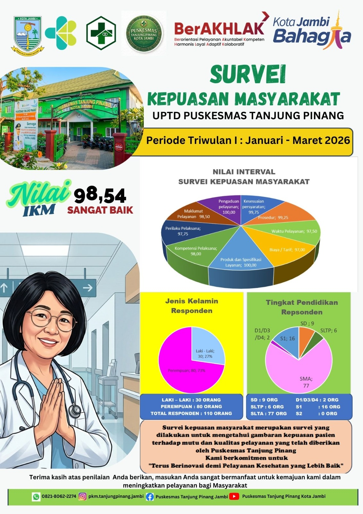

Sejarah Puskesmas
Konten placeholder — mohon dilengkapiUPTD Puskesmas Tanjung Pinang merupakan Fasilitas Pelayanan Kesehatan Tingkat Pertama (FKTP) di bawah Dinas Kesehatan Kota Jambi yang melayani masyarakat di wilayah Tanjung Pinang dan sekitarnya.
Bagian ini masih berisi teks sementara. Kirimkan cerita singkat berdirinya puskesmas — misalnya tahun berdiri, perkembangan gedung/fasilitas, dan pencapaian penting — untuk melengkapi bagian ini.
Visi & Misi
Konten placeholder — mohon dilengkapiVisi
"Terwujudnya masyarakat Tanjung Pinang yang sehat, mandiri, dan berkeadilan." (contoh — sesuaikan dengan visi resmi puskesmas)
Misi
- Memberikan pelayanan kesehatan yang bermutu, merata, dan terjangkau bagi seluruh masyarakat.
- Meningkatkan upaya promotif dan preventif untuk mencegah penyakit sejak dini.
- Membangun kemitraan lintas sektor dalam mendukung derajat kesehatan masyarakat.
- Mengembangkan sumber daya manusia kesehatan yang profesional dan berintegritas.
Kirimkan visi dan misi resmi untuk mengganti contoh di atas.
Motto & Tata Nilai
Motto: "Dengan Semangat Paripurna Kami Siap Memberikan Pelayanan Prima"
Tata Nilai: SEHATI
Sopan
Ramah dalam setiap pelayanan
Empati
Peduli terhadap kebutuhan pasien
Handal
Kompeten dan dapat diandalkan
Adil
Melayani tanpa membeda-bedakan
Terampil
Cekatan dan profesional
Inovatif
Terus berinovasi meningkatkan mutu
Struktur Organisasi
Sebagian data terkonfirmasi, sebagian placeholder
dr. Tini
Kepala UPTD Puskesmas Tanjung Pinang · Pembina Tk.I / IV b · NIP. 19771208 200604 2 018Kepala Sub Bagian Tata Usaha
Nama pejabat menyusulStruktur lengkap (penanggung jawab tiap klaster/program) dapat ditambahkan setelah data diberikan.
Wilayah Kerja & Pustu
UPTD Puskesmas Tanjung Pinang membawahi Puskesmas Pembantu (Pustu) berikut untuk memperluas jangkauan pelayanan kesehatan:
Indeks Kepuasan Masyarakat
Hasil Survei Kepuasan Masyarakat terhadap pelayanan UPTD Puskesmas Tanjung Pinang, disusun per triwulan.
110 responden

82 responden

Prestasi & Penghargaan
Belum ada data prestasi/penghargaan yang ditambahkan.
Kirimkan daftar penghargaan (nama, tahun, pemberi) untuk ditampilkan di sini.